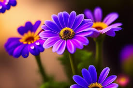

Rosas
As rosas são as flores mais populares do mundo e simbolizam amor, paixão e beleza. Existem diversas variedades de rosas, cada uma com sua própria cor e significado.
Variedades de Rosas
- Rosa Vermelha: Simboliza amor e paixão.
- Rosa Rosa: Representa admiração e gratidão.
- Rosa Branca: Simboliza pureza e inocência.
Cuidados com as Rosas
Para manter suas rosas bonitas por mais tempo, siga estas dicas:
- Mantenha a água fresca e troque-a regularmente.
- Remova as folhas inferiores que ficarem na água.
- Escolha um local fresco e com luz indireta.
Nossos Destaques
Sobre nós
Minha paixão por flores começou muito tempo atrás...